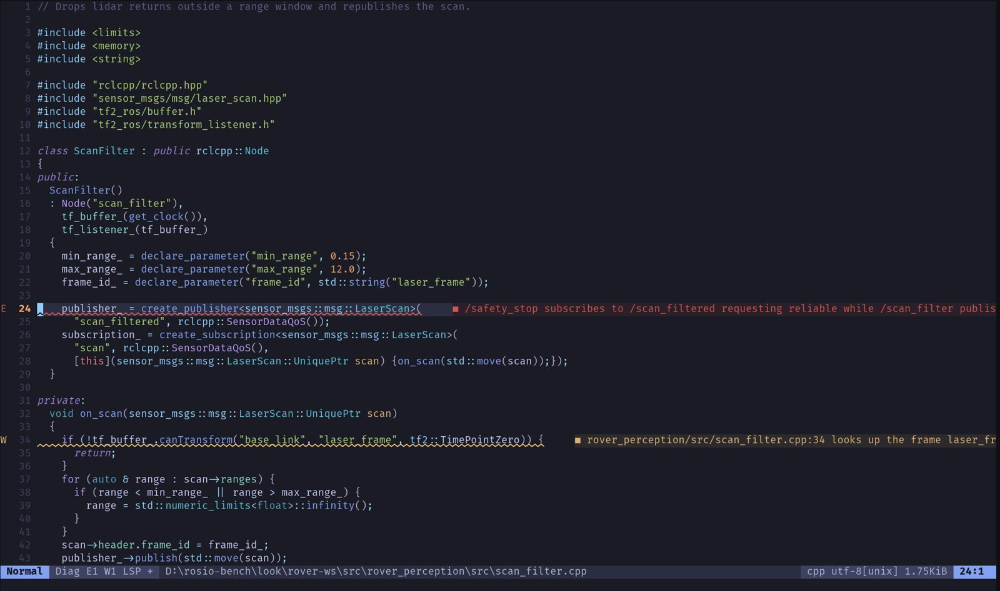
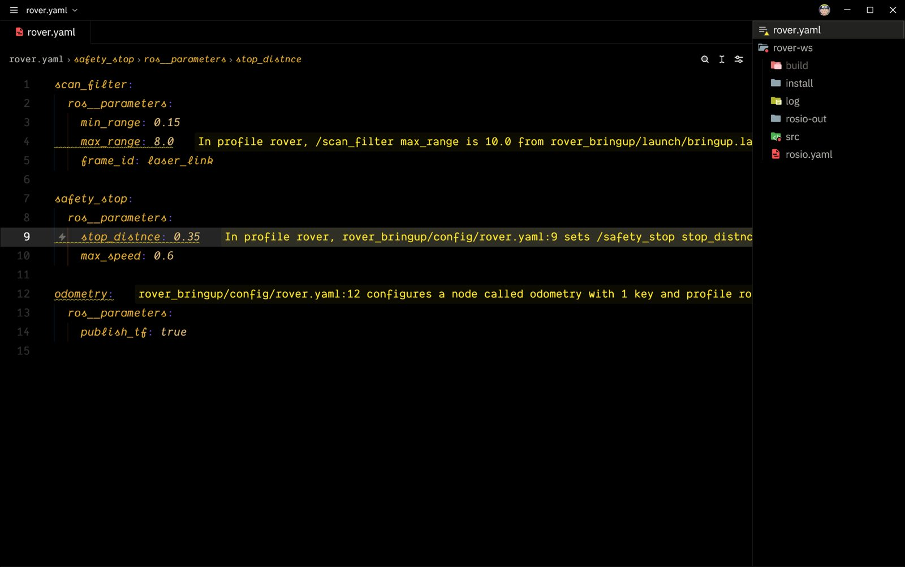

Neovim
A QoS that can never connect, on the line that creates the publisher.

rosio reads a ROS 2 system four ways (launch files, source code, the running graph and recorded bags) and names the line where they disagree.
max_range on /scan_filter
10.0 wins, set at bringup.launch.py:28. The 8.0 in rover.yaml:4 never applies.
The example rover in the repository carries five faults on purpose. Pick a command.
{{rover-drift}}
{{rover-explain}}
{{nav2-param}}
{{migrate}}
{{agent}}
A QoS that can never connect, on the line that creates the publisher.

A misspelt key in a parameters file, with the name the node declares.

Every node and topic before the robot runs.

The URDF drawn from its meshes, every frame named.

A TAI offset in a recording, named before it breaks TF.
$ rosio stamps tai_recording ERROR epoch_offset /scan /scan offset -36.980 s matches the TAI to UTC offset (37 s)
One exit code, and every waiver keeps its reason.
$ rosio drift --fail-on error 5 findings: 1 error, 0 info, 4 warn error qos.incompatible $ echo $? 5
Install it, run it on your workspace, and fix the first line it names.